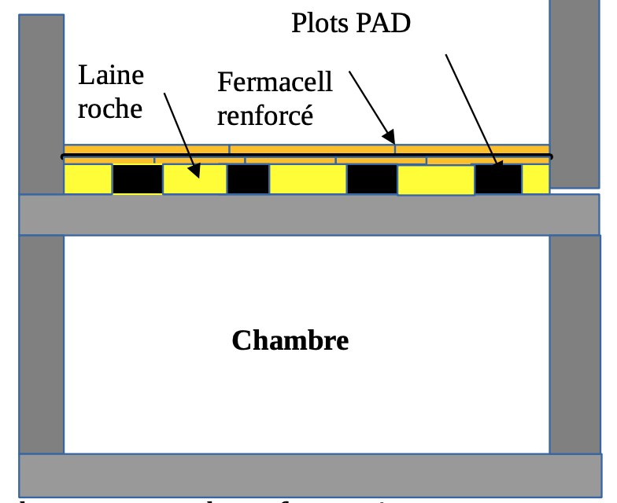

Solutions Acoustiques pour l'Habitat
Expertise technique et réglementaire pour un confort acoustique optimal
Généralités
L'acoustique est une science très ancienne depuis la Grèce Antique. L'acoustique science du son et des bruits a des applications dans l'industrie, l'environnement et le bâtiment.
Dans le bâtiment, nous abordons :
- L'acoustique intérieure avec les solutions adéquates
- L'acoustique extérieure (route, métro) et ses solutions
- Les bruits d'équipements (VMC, Ascenseur) et ses solutions
I – L'acoustique intérieure
1- Les bruits aériens
Les bruits aériens sont les voix parlées, la télévision, la chaine hi fi... Dans les immeubles haussmanniens, ces voix sont audibles mais pas perceptibles. Ces bruits sont gênants vis à vis du voisin. Il y a lieu de les traiter.
1-1- Solutions techniques acoustiques
1-1-1- Voisins superposés
La solution faux plafond acoustique est très efficace pour l'isolement aux bruits aériens. Les sons ne sont plus audibles.
1-1-2- Voisins mitoyens
SCHEMA D'UNE CONTRE CLOISON ACOUSTIQUE

Le doublage d'un mur parpaing creux 200mm par une contre cloison acoustique est très performant. Le plaignant n'entend plus rien.
2- Les bruits solidiens
Les bruits de pas des parents ou des enfants qui courent seront atténués par les plots PAD. Les voisins de la chambre en dessous dormiront sur leurs deux oreilles.
SOLUTION ANTI-BRUITS SOLIDIENS
Utilisation de plots PAD, laine de roche et Fermacell renforcé
II- L'acoustique extérieure
Les bruits aériens extérieurs sont respectivement :
- Les bruits routiers
- Les bruits ferroviaires
1- Rappel de la réglementation acoustique pour les bruits extérieurs
La réglementation acoustique s'applique suivant l'arrêté du 30 Mai 1996. Nous parlerons de la partie la plus pratique.
1-1 - Classement des infrastructures
Il existe 5 classes acoustiques d'infrastructures classées suivant le niveau sonore auquel elles sont soumises.
2- Détermination de l'isolement acoustique minimal
En application du décret n° 95-21 du 9 janvier 1995, les pièces principales et cuisines des logements dans les bâtiments d'habitation à construire dans le secteur de nuisance d'une ou plusieurs infrastructures de transports terrestres doivent présenter un isolement acoustique minimal contre les bruits extérieurs.
2-1. Dans les rues en U
| Catégorie | Isolement minimal DnAT |
|---|---|
| 1 | 45 dB (A) |
| 2 | 42 dB (A) |
| 3 | 38 dB (A) |
| 4 | 35 dB (A) |
| 5 | 30 dB (A) |
2-2. En tissu ouvert
Le tableau suivant donne, par catégorie d'infrastructure, la valeur de l'isolement minimal des pièces en fonction de la distance entre le bâtiment à construire et l'infrastructure.
3- Isolation acoustique des façades – solutions techniques
Cas d'un logement ancien en béton (construit entre 1970 et 1996) : façade béton, fenêtre de dimension standard.
3-1- Tableau de calcul standard
| Dn,A,tr (dB) | RA,TR fenêtre (dB) | Dn,e,vol roulant (dB) | Dn,e (entrée d'air) |
|---|---|---|---|
| 30 | 30 | 37 | 37 |
| 35 | 35 | 42 | 42 |
| 38 | 38 | 45 | 45 |
| 42 | 42 | 49 | 49 |
| 45 | 45 | 52 | 52 |
4- Cas particulier : Vibrations du métro
4-1- Généralités
Les vibrations du métro constituent une grande gêne vis à vis bâtiments voisins (logement, hôtel, hôpitaux...). Un traitement efficace s'avère indispensable.
4-2- Solutions techniques antivibratoires
La solution consiste à filtrer les vibrations par des résilients en polyuréthane de type Sylomer ou Sylodyn (Getzner) au niveau des fondations pour les immeubles neufs.
COUPE D'UNE FONDATION BÉTON DÉSOLIDARISÉE PAR DU SYLODYN

Solution technique avec reprise en sous-œuvre et interposition du sylomer ou sylodyn
Dans les immeubles anciens parisiens, l'enjeu est de taille pour les propriétaires d'immeuble subissant les vibrations du métro. Une moins value d'au moins 25 % sur le prix du mètre carré, la solution GETZNER efface la moins value et valorise immédiatement le bâtiment.
Conclusion générale
Le bruit réel phénomène de société doit être traité dans sa globalité: acoustique extérieur (façade) et acoustique intérieure (bruit de voisinage). La solution globale apportera un véritable confort de vie aux occupants sans nuire à la santé des français. De plus la valeur ajoutée d'un bien immobilier neuf ou ancien dépend de la qualité acoustique de construction et de ses solutions antivibratoires lorsque le métro circule.
Annexe : Étude d'impact acoustique sur le voisinage
L'étude d'impact s'intéresse aux bruits liés à la diffusion de musique sur son environnement proche. Elle permet d'une part de préserver la tranquillité des riverains, et d'autre part de protéger l'usager de l'établissement diffusant de la musique amplifiée. En fait, il s'agit de préserver l'environnement sonore du voisinage d'un bar, d'un club, d'un restaurant ou tout autre lieu musical. Les bruits de clientèle ne sont pas pris en compte dans l'étude d'impact.
Cette étude d'impact est réalisée en plusieurs étapes :
- Mesure de l'isolement au bruit aérien entre l'établissement et les logements les plus exposés
- Mesure du niveau de bruit résiduel (évaluation du niveau de bruit lorsque l'établissement est fermé)
- Mesure du niveau sonore dans l'établissement avec la sonorisation en fonctionnement
Ces mesures acoustiques vont permettre de définir les niveaux sonores maximums que peut diffuser l'établissement. En fonction de ces niveaux, l'installation d'un limiteur de niveau sonore devra ou non être obligatoire. L'objectif étant la protection du voisinage de la diffusion de musique amplifiée.
L'étude d'impact acoustique est obligatoire et sera réalisée par un ingénieur acousticien.
TEXTES RÉGLEMENTAIRES
- Le décret du 15 décembre 1998 relatif aux établissements diffusant à titre habituel de la musique amplifiée
- Le décret du 07 août 2017 relatif à la prévention des risques liés aux bruits et aux sons amplifiés
- Le décret du 31 aout 2006 relatif aux bruits de voisinage